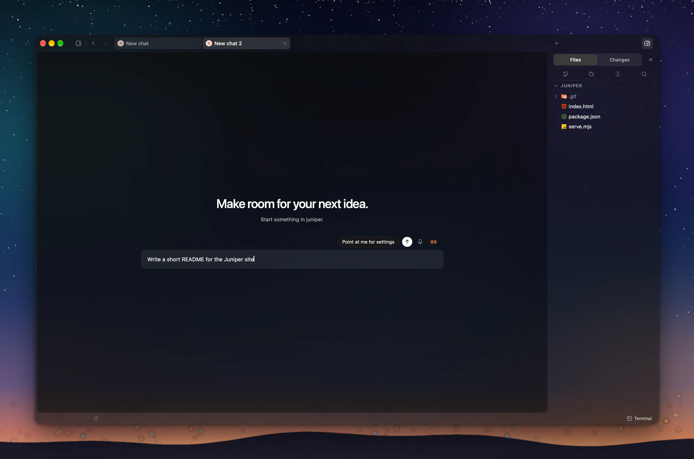
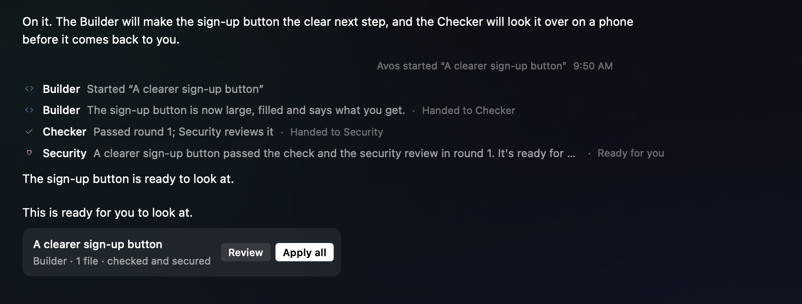
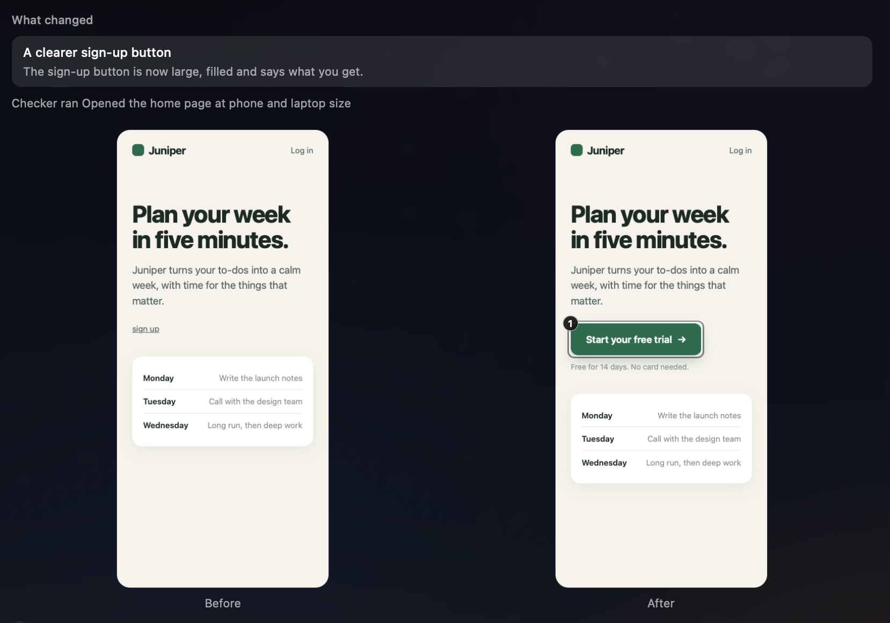

Every agent. One window.
A desktop workspace for coding agents. Your chats, your project and a real browser, side by side.
- Version
- 0.1.181
- Mac
- Apple Silicon
- Windows
- x64
- Providers
- 8
- Aven account
- None
- Licence
- MIT

Write what you want in a new chat. The files of the project are beside it.
Swipe a picture sideways to see all of it.
Workspace
Everything a task needs stays in view.
Read the change, run it and see it, without leaving the window.
- Tabs Chats and pages in one row. Drag to split.
- Browser Your site, live, beside the chat that changes it.
- Changes Each file the agent touched, line by line.
- Message box Type / for skills and @ for files.
- File editor Open a file beside the chat that changed it.
- Comment on a page Select an element and send a note to the chat.
- Project board Write a feature down, press Build, and follow its card.
- Notes and Inbox Markdown notes, and your GitHub issues and pull requests.
- Terminal A shell in the project folder.
Set how much shows through. Try it: this page is glass too.
Providers
Use the accounts you already pay for.
Aven runs each provider's own tool with your sign-in. It needs no Aven account, and the charges stay with the provider.
Install and sign in from Aven
- Claude Code
- Codex
Found when installed
- Cursor
- Grok Build
- OpenCode
- Pi
- omp
- fx
Nothing is installed until you choose it. New models appear without an Aven release.
Agents
Ask once. A bot and its helpers do the work.
Avos takes your request and shares it out. Nothing reaches your folder until you apply it.
- Avos Takes your request and shares it out.
- Builder Makes the change in a copy of your project.
- Checker Tests it, and opens the page at phone and laptop size.
- Security Reads the change before it comes back.
- You Review the result, then apply it.
Each helper reports in the chat
When the work is ready, one card offers Review and Apply all.

See the change before it reaches your files
Review shows the page before and after the change, side by side.
- Phone and Desktop show the page at both sizes.
- Click After to leave Avos a note.
- Apply copies the change to your files.

Three more ways to put agents together
- Discuss Two chats talk a question through.
- Race Several agents get the same task. You keep the best result.
- Orchestrator A lead agent shares the work out to other agents.
Schedule
Run agents while you do something else.
An agent starts at a set time while Aven is open. You hear from it only when it needs you.
-
Morning briefing
What changed since yesterday and what needs attention
first.
Weekdays at 08:30
-
Nightly test run
Runs the tests and proposes a fix on a branch if one
fails.
Every day at 02:00
-
Dependency check
Finds outdated or vulnerable packages and prepares safe
updates.
Mon at 09:00
-
Issue triage
Suggests labels and priority for new GitHub issues.
Weekdays at 09:00
-
Weekly changelog
Drafts release notes from the week's changes.
Fri at 16:00
-
Stale TODOs and docs
Spots recent TODOs and docs that no longer match the
code.
Every 24 hours
These six come with Aven. Change them, or write your own.
Install
Free, open source, and yours to build.
Download it, connect a provider and start a task. Updates never interrupt a running agent.
First run
- Open Aven and choose the providers you want to connect.
- Run the install or sign-in step for each one.
- Pick a project folder, a model and an access mode, then start a task.
Build from source
React and TypeScript on a Rust and Tauri shell. This opens a separate Aven Dev beside your installed Aven.
git clone https://github.com/capi-git/aven.git
cd aven
npm ci
npm run dev:doctor
npm run dev:app